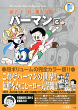

| |

＜小学一年生、幼稚園、よいこ、
めばえ、小学館の絵本、
幼児絵本、小学館の絵文庫
掲載集＞
定価：本体1,500円＋税
A5判／392ページ
好評発売中！
★は初めて単行本に収録される
作品です。
※収録内容は変更になる
場合があります。

|
パーマンとうじょう（小一67年03月号）
★学校ごっこ（小一67年04月号）
どうろぼうをやっつけろ！（小一67年05月号）
★アフリカでお絵かき!?（小一67年06月号）
パパがとんじゃった（小一67年07月号）
みつ夫の海水浴（小一67年08月号）
台風がきた！（小一67年09月号）
おばけ屋敷（小一67年10月号）
パーマンのけいさつ鳥（小一67年11月号）
どろぼうのプレゼント（小一67年12月号）
パーだるま（小一68年01月号）
インスタントロボット（小一68年02月号）
ロボット・ショー（小一68年03月号）
コピーロボット学校へ行く（小一68年04月号）
怪人火の玉男（小一68年05月号）
雨のおむかえ（小一68年06月号）
★山へハイキング（小一68年07月号）
怪物戦車あらわる！（小一68年08月号）
★わるものをつかまえろ！（幼稚園 67年03月号）
★そらとぶさんりんしゃ（幼稚園 67年04月号）
★そらでおにごっこ（幼稚園 67年05月号）
★こいぬとパーマン（幼稚園 67年06月号）
★マントがなくなった！（幼稚園 67年07月号）
★パーマンの浦島太郎（幼稚園 67年08月号）
パーマンのさかなとり（幼稚園 67年09月号）
★おじさんへの手紙（幼稚園 67年10月号）
★なんでもなる木（幼稚園 67年11月号）
★みっちゃんをさがせ（幼稚園 67年12月号）
★おおきなたこをあげよう（幼稚園 68年01月号）
★めいわくなドライバー（幼稚園 68年02月号）
★かわったじどうしゃ（幼稚園 68年03月号）
パーマンセットをおいかけろ（幼稚園 68年04月号）
★パーマンの人だすけ（幼稚園 68年05月号）
★マントをぬすんだサル（幼稚園 68年06月号）
★たまごをわるな!!（幼稚園 68年07月号）
すずしくすごそう（幼稚園 68年08月号）
★パーマン対どろぼう（幼稚園 68年09月号）
|
★うえきさがし（よいこ 67年03月号）
★おはなみにいこう（よいこ 67年04月号）
★パーマンのハイキング（よいこ 67年05月号）
★おりがみにのって（よいこ 67年06月号）
★きれいなはなび（よいこ 67年07月号）
★むしかごにはいったのは？（よいこ 67年08月号）
★ヘリコプターにのりたい（よいこ 67年09月号）
★なかないすずむし（よいこ 67年10月号）
★たきびでやきいも（よいこ 67年11月号）
★みつ夫はよわむし？（よいこ 67年12月号）
★ゆきだるまきょうそう（よいこ 68年01月号）
★いえごとアフリカりょこう（よいこ 68年02月号）
★かじをけせ！（よいこ 68年03月号）
★クジラをつろう（よいこ 68年04月号）
★いとでんわであそぼう（よいこ 68年05月号）
★くものなかのかいじゅう（よいこ 68年06月号）
★いそげ！ しょうぼうしゃ（めばえ 67年03月号）
★ふうせんまちがい（めばえ 67年04月号）
★こいのぼりそらをとぶ（めばえ 67年05月号）
★ぶらんこにのりたい（めばえ 67年06月号）
★あめふりのたなばた（めばえ 67年07月号）
★おおきなかさ（めばえ 67年08月号）
★うみべのまいご（めばえ 67年09月号）
★トラックかえして（めばえ 67年10月号）
★ゆうびんはいたつ（めばえ 67年11月号）
★おんぶでそらをとぶ（めばえ 67年12月号）
★パーマンのたこあげ（めばえ 68年01月号）
★まめまきをしよう（めばえ 68年02月号）
★かみひこうきがほしい（めばえ 68年03月号）
★くるまにきをつけろ！（めばえ 68年04月号）
★まいごのこいのぼり（めばえ 68年05月号）
★どかんロボット（めばえ 68年06月号）
★パーマンはなび（めばえ 68年07月号）
★ひとさらいたいじ（小学館の絵本 67年6.25発行）
★ぼくのともだち（小学館の絵本 67年10.25発行）
★うきぶくろ（幼児絵本 67年08.01発行）
★たからさがし（小学館の絵文庫 67年発行） |